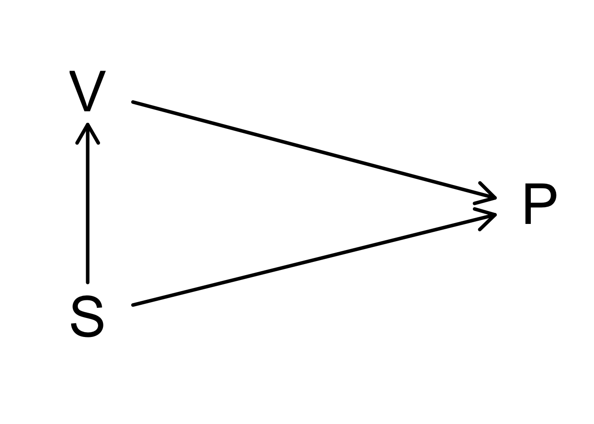

3. Some concepts on experimental design
statOmics, Ghent University (https://statomics.github.io)

1 Random sampling
Peroutka S. J. (1987). New England Journal of Medicine, 317, 1542–1543 reported that “A random, anonymous survey of 369 Stanford undergraduates found that 143 students, or 39 percent, had taken the drug Ecstasy at least once.”
In an interview Peroutka argued that ‘It appears we literally have thousands of people who have taken it or are taking it and we don’t know what the effects are’
Experimental design?
“… data collected at the Stanford Student Union on Friday and Saturday nights where attractive young research assistants would solicit information from students. Grob C. (2000) Addiction Research, 8:6, 549-588”
Location/time bias: these students are not representative for the entire student population.
Interviewer bias: attractive young assistants asking information on “trendy and rebellious topics” can attract/elicit certain groups/answers more than others.
Location/time bias could have been avoided by drawing a random sample, so that all students from the population had the same probability to be included in the sample.
A random sample is representative for the population.
2 Experimental studies
2.1 Important concepts
In an experiment a researcher applies a treatment to experimental units and observes the effect of the treatment on the experimental units by measuring one or more response variables.
Experimental unit: a unit (subject, plant, pot, lab animal) that is randomly assigned to a treatment.
Response variable: characteristic of interest of the experimental unit that is measured and analysed to assess the effect of the treatment.
Observational unit: unit on which the response variable is measured. There is often a 1-to-1 relation between the experimental and the observational unit, but not always, e.g. pseudo-replication (technical repeats).
Explanatory (independent) variable: variable that can potentially explain part of the variability in the response.
2.2 Need for a good control
- Salk study: suppose that we vaccinate everybody?
\(\rightarrow\) Need for a control group
To assess the effect of an intervention, we need to compare the response between a test and a control group.
Test and control groups have to be comparable!
This is often not possible in a pretest/post-test design: e.g. effect before and after administering a drug without the use of a placebo group.
Parallel study: simultaneous comparison of test and control!
- Controlled NFIP study:
Code
nfip <- tibble(
group = c("cases", "controls", "noConsent"),
grade = c("g2", "g1g3", "g2"),
vaccin = c("yes", "no", "no"),
total = c(221998, 725173, 123605),
polio = c(54, 391, 56)
) |>
mutate(
noPolio = total - polio,
incidencePM = round(polio / total * 1e6, 0)
)
knitr::kable(nfip)| group | grade | vaccin | total | polio | noPolio | incidencePM |
|---|---|---|---|---|---|---|
| cases | g2 | yes | 221998 | 54 | 221944 | 243 |
| controls | g1g3 | no | 725173 | 391 | 724782 | 539 |
| noConsent | g2 | no | 123605 | 56 | 123549 | 453 |
\(\rightarrow\) Confounding

We observe a lower polio (P) incidence for children whose parents did not give consent than in the control group.
Socio-economic status (S) affects both the vaccination (V) and the polio incidence (P).
Groups may only differ in treatment!
\(\rightarrow\) Randomized double-blinded studies: neither the participant nor the researcher know who received the control and who received the treatment.
2.3 Randomized experiments
Avoid confounding by creating comparable groups.
Randomization: random assignment to the treatment groups (no systematic allocation).
\(\rightarrow\) systematic differences between the groups can only be caused by the intervention.
2.3.1 Results Salk studies?
- Controlled NFIP study:
Code
knitr::kable(nfip)| group | grade | vaccin | total | polio | noPolio | incidencePM |
|---|---|---|---|---|---|---|
| cases | g2 | yes | 221998 | 54 | 221944 | 243 |
| controls | g1g3 | no | 725173 | 391 | 724782 | 539 |
| noConsent | g2 | no | 123605 | 56 | 123549 | 453 |
- Randomized double-blinded Salk study:
Code
salk <- tibble(
group = c("cases", "control", "noConsent"),
treatment = c("vaccine", "placebo", "none"),
total = c(200745, 201229, 338778),
polio = c(57, 142, 157)
) |>
mutate(
noPolio = total - polio,
incidencePM = round(polio / total * 1e6, 0)
)
knitr::kable(salk)| group | treatment | total | polio | noPolio | incidencePM |
|---|---|---|---|---|---|
| cases | vaccine | 200745 | 57 | 200688 | 284 |
| control | placebo | 201229 | 142 | 201087 | 706 |
| noConsent | none | 338778 | 157 | 338621 | 463 |
2.3.2 Simple Randomization
Can lead to differences in the number of experimental units in each treatment arm
in 5% of the cases we might observe an imbalance
- of at least 60:40 in a study with 100 subjects, and
- of at least 531:469 in a study with 1000 subjects.
This imbalance is not problematic, but causes a loss in precision of the estimators (e.g. means).
2.3.3 Balanced Randomization
Equal numbers of each treatment are assigned to a block of 2, 4 or more subjects.
- AB, (2) BA
- AABB, (2) ABAB, (3) ABBA, (4) BABA, (5) BAAB, (6) BBAA
- …
Balanced Randomization ensures \(\pm\) the same number of subjects in each treatment arm of the experiment (e.g. control and treatment group).
It does not ensure that we have an equal number of males and females in each group, etc.
In small studies, the groups can be unbalanced in other characteristics (e.g. gender, race, age …)
This is not problematic because it occurs at random, but, again it causes a loss in precision.
2.3.4 Stratified randomization
- The imbalance according to for instance gender can be avoided using stratified randomization: balanced randomization per stratum

2.3.5 Correction for confounding (‘adjustment for’)
Suppose that the intervention groups we want to compare are nevertheless not inherently comparable.
Then ‘correction’ via the study design is no longer possible.
Corrections then have to be done in the statistical analysis (see e.g. chapter 8 on multiple regression).
3 Factorial designs
Factorial designs are experiments that assess the effect of more than one intervention using a design that allows to estimate interactions between the treatments.
i.e. it allows to assess whether 2 interventions enhance or weaken each other.
E.g.: what is the effect of the concentration of hydrogen peroxide and of bovine liver extract on the reaction rate of catalase?
| Substrate (A) Enzyme (B) | B₁: 25% extract | B₂: 100% pure extract |
|---|---|---|
| A₁: 1% H₂O₂ | A₁B₁ | A₁B₂ |
| A₂: 6% H₂O₂ | A₂B₁ | A₂B₂ |
Factorial designs provide richer information than separate parallel designs.
They allow to detect interactions: e.g. when the effect of extra enzyme (from 25% to 100%) at a low substrate concentration (1% \(H_2O_2\)) is smaller (larger) than at a high substrate concentration (6% \(H_2O_2\)) and vice versa.
In the absence of interactions, we get as much insight in the effects of the 2 factors as from 2 separate parallel designs.
4 Sample size
The sample size and the design are crucial.
The same design where a sample is drawn from the same population but with more subjects \(\rightarrow\) more precise results (see introduction).
5 Block designs
5.1 Gene expression example
- dm: diabetic medium, nd: non diabetic medium, co: control
- 4 bio-reps, 2 techreps/biorep

- dm: diabetic medium, nd: non diabetic medium, co: control
- 4 bio-reps, 2 techreps/biorep, 2 plates A & B
- Treatment and plate almost entirely confounded

5.2 Nature methods: Points of significance - Blocking
https://www.nature.com/articles/nmeth.3005.pdf
5.3 Randomized complete block designs
- Experimental designs where the subjects/experimental units are first divided into blocks.
- Subsequently, each level of the intervention is applied within each block and assigned by randomization.
- This can e.g. be done by stratified randomization: stratification according to the blocks.
- Useful when the outcome varies strongly between subjects/experimental units so that the intervention effect is hard to pick up.
- If the data are much less variable within a block, randomizing the intervention within each block allows to assess the intervention effect within block with much less noise.
- Also often used to deal with technical variability.
- E.g. larger experiments: multiple cell cultures are needed, not everything can be done in the lab at the same time, multiple sequencing runs are needed to measure gene expression.
- Fluctuations in lab conditions, between cell cultures or from sequencing run to sequencing run induce additional technical noise.
- Blocks (e.g. time points, runs, cell cultures) and randomize treatments within each block.
- Again, intervention effects can then be estimated with much less noise.
- See also 8.3. Experimental Design II.
6 Observational studies
- In observational studies there is no experimentation.
- The researcher observes the exposures that each individual undergoes.
- Hence, the presence of confounders can never be excluded.
6.1 Vitamin E and the risk on coronary heart disease
Prospective observational study on the effect of vitamin E:
“After controlling for age and several coronary risk factors, we observed a lower risk of coronary disease among men with higher intakes of vitamin E (P for trend = 0.003). For men consuming more than 60 IU per day of vitamin E, the multivariate relative risk was 0.64 (95% confidence interval, 0.49 to 0.83) as compared with those consuming less than 7.5 IU per day.”
- The data suggest a beneficial effect of vitamin E.
- On that basis, a large-scale administration of vitamin E was recommended.
- But, are vitamin E users comparable to non-users?
6.2 Comparison with experimental studies on the effect of vitamin E
From experimental double-blinded randomized vitamin E/placebo studies we learned:
- nutrition intervention studies in Linxian (China): relative risk (RR) 0.90 (95% confidence interval (CI), 0.76-1.07);
- Alpha-Tocopherol, Beta Carotene Cancer Prevention study: RR 1.18 (95% CI, 0.62-2.27);
- Gruppo Italiano per lo Studio della Sopravivenza nell’ Infarto miocardico Prevenzione study: RR 0.95 (95% CI, 0.86-1.05);
- Heart Outcomes Prevention Evaluation study: RR 1.05 (95% CI, 0.95-1.16);
- Primary Prevention Project: RR 1.07 (95% CI, 0.74-1.56);
- Heart Protection Study: RR 1.06 (95% CI, 0.95-1.18).
6.3 Observational versus experimental studies
Observational studies typically suffer from confounding.
Correction for confounding is of course only possible for the factors that have been measured.
This makes observational studies more limited for drawing causal conclusions.
Randomized studies ‘in principle’ exclude the existence of such factors.
They are therefore the gold standard for causal conclusions, but they are not always feasible or possible.
7 Wrap-up
Sample size is very important.
In experimental studies, the researcher assigns the treatment.
To assess the effect of a treatment, we should compare comparable and representative groups of subjects with and without the treatment (a good control!).
Confounding can be avoided via randomization.
Blocking and factorial designs allow to estimate intervention effects more precisely and to study interactions.
In observational studies, the researcher cannot choose the treatment. It was the patient or their MD who had chosen it.
We can also correct for confounding in the statistical analysis for the confounders that have been registered.